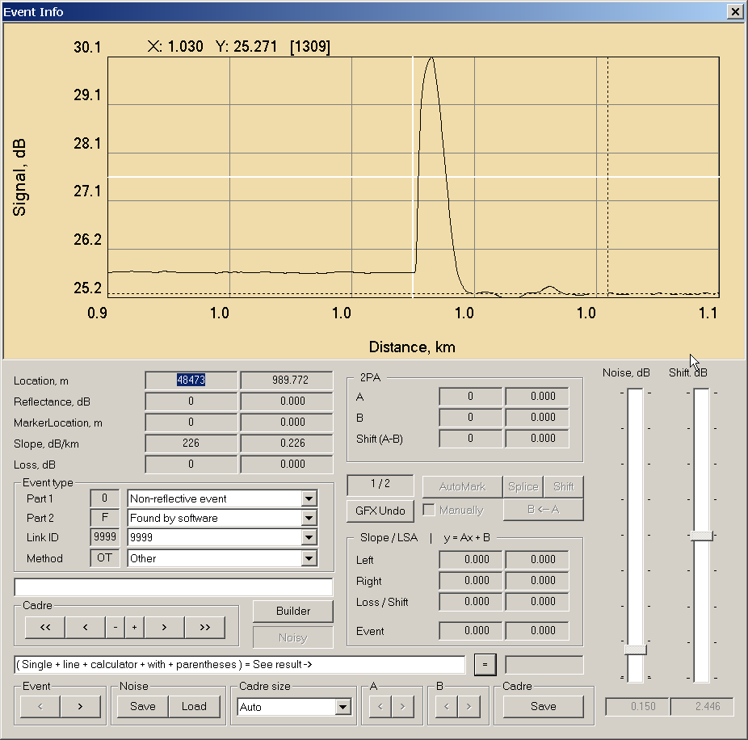
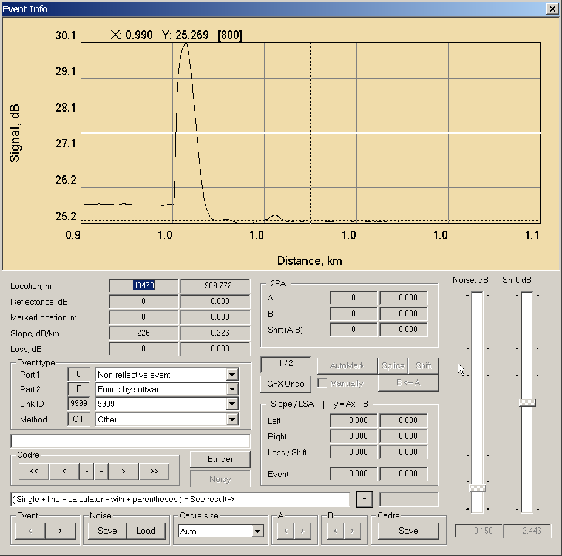
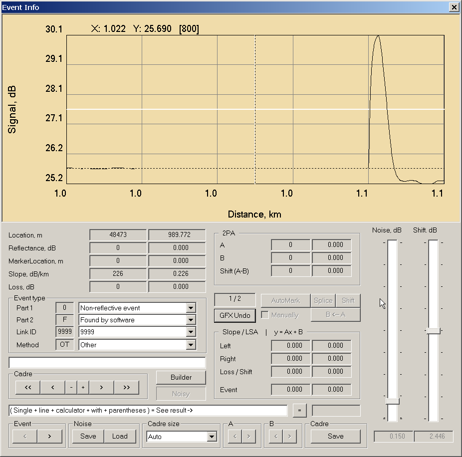

Move - Вставка/удаление участка трассы.
Координаты сдвига вычисляются по отрисованному мышкой прямоугольнику (ZoomBox). Их четыре: top / bottom / left / right.
При сдвиге используются только две из них.
Когда выбирается горизонтальный сдвиг, то он выполняется на величину (right - left), когда вертикальный - (bottom - top).
Иными словами, при сдвиге одна стенка ZoomBox должна прикасаться к той точке трассы, от которой производится сдвиг, а противоположная ей станет той точкой, в которую трасса будет сдвинута.
При горизонтальном сдвиге игнорируется высота ZoomBox (bottom - top), при вертикальном сдвиге, соответственно, ширина ZoomBox (right - left).

При перемещении влево отмеченный блок трассы удаляется и ТЕРЯЕТСЯ, трасса сдвигается справа-налево на размер Size, остаток трассы (за хвостом) забивается фейковым значением, полный размер (километраж) трассы НЕ изменяется

При перемещении вправо отмеченный блок трассы сдвигается направо, хвост трассы, вышедший за пределы километража ТЕРЯЕТСЯ, трасса сдвигается слева-направо на размер Size, опустевший (слева) участок забивается фейковым значением, полный размер (километраж) трассы НЕ изменяется
